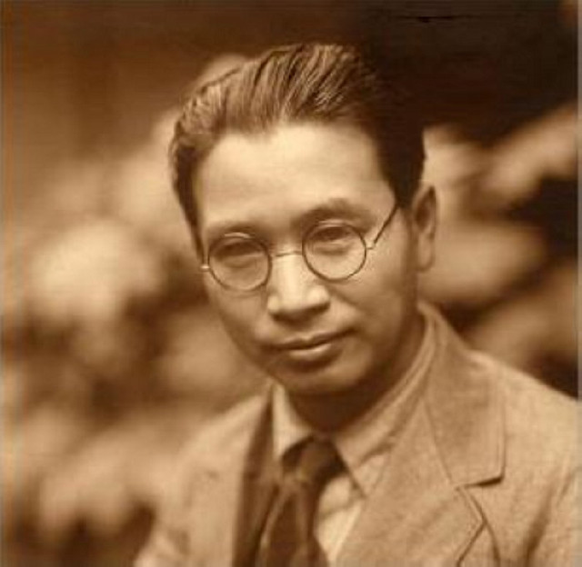

-1-MasterItem.svg)
Stories of Westminster United Church & its People / Page
78
an hour in private discussion with the famous Christian speaker.
This meeting resulted in two sermons at Westminster. One, ‘Kagawa’s
Challenge to Canada,’ contained a challenge to Westminster Church
to lead the City of Winnipeg in establishing the spiritual and economic
aspects of the evangelist’s Kingdom. Kagawa’s travel through Nova Scotia
did, in fact, result in the development of a cooperative movement there
based on his ideas.
During Bonnell’s time at Fifth Avenue Presbyterian his reputation lead
to his involvement in and often leadership of a number of well regarded
professional groups such as the National Conference of Christians and
Jews. He also spoke widely in the U.S. to ministerial conferences. In 1966 he
came out of retirement
to serve for three years as the president of New York Theological Seminary.
One final quotation from John Sutherland Bonnell to his fellow American
preachers in 1958:
There is too much take-it-or-leave-it preaching in America today. One of the
great lacks in
American preaching is the lack of passion. We seem to be afraid of the emotions.
Every address
should contain appeal to the intellect, the emotions, and the will; for unless
the emotions
are fired the will will never be moved.
With so much heartbreak and tragedy in the world, the note of of compassion must
always be on
our lips.We must remember that we are spokesmen for God and that our preaching
is linked with
the prophets of Israel. These men were forth-tellers and not foretellers as we
now think of them.
The true test of great preaching is not eloquence or well chosen words. It is
whether
the listeners have heard the voice of God.
Perhaps this preaching “statement of belief” gives us a clue as to why Bonnell was regarded as a
great preacher, even 16 years after he had left Westminster Church.
In February, 1992, his death was announced at his home in Roseburg, Oregon. He
was 99 years old.
Rev. John Sutherland Bonnell
